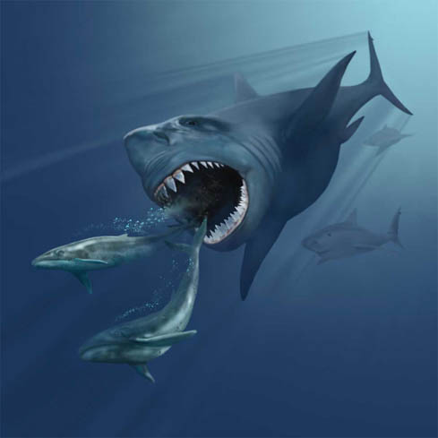

{% extends '_layout.html' %}
{% block title %}Cryptid Catalog | Encyclopedia{% endblock %}
{% block body %}
- BACK
- MEGALODON
- Type: Aquatic

- The megalodon is a gigantic shark that is said to be as old as dinosaurs. Until recently, this monster has lived in the unexplored, deepest, darkest parts of the ocean.
In recent years, this beast has made its way to the surface, capsizing several water vessels and consuming its passengers.
The megalodon may be mistaken for a whale at first sight but is said to be more than 60 ft long - larger than a school bus.
{% endblock %}